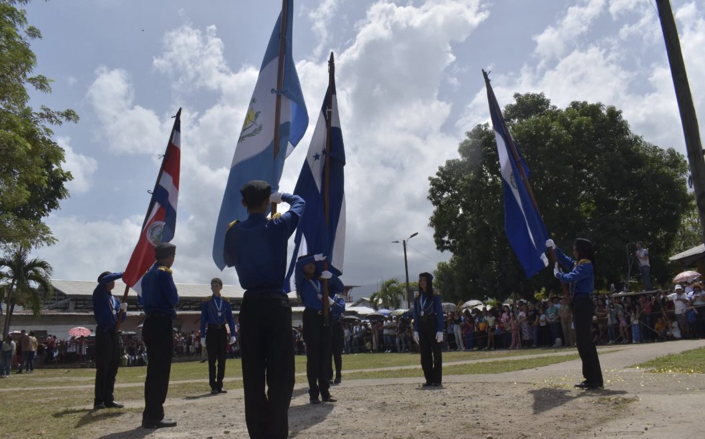

¡Nuestro instituto desfila celebrando los 205 años de independencia!
Con alegría, orgullo y patriotismo, nuestra comunidad educativa se une a la celebración de las fiestas patrias, honrando la historia, la cultura y la identidad de nuestra nación.

Cada 15 de septiembre, Honduras conmemora la independencia de Centroamérica. Esta fecha representa una oportunidad para recordar nuestra historia, fortalecer los valores cívicos y demostrar el orgullo de pertenecer a nuestra patria.
Una celebración llena de orgullo y patriotismo
El Instituto 4 de Septiembre de 1964 se suma a esta importante celebración con la participación de su comunidad educativa en los desfiles patrios. A través de estas actividades, nuestros estudiantes tienen la oportunidad de expresar su respeto por los símbolos nacionales y mantener vivas las tradiciones que nos identifican como hondureños.
Nuestros estudiantes representan al instituto
Con entusiasmo, disciplina y dedicación, los estudiantes participan en una jornada que destaca el trabajo en equipo, el respeto y el compromiso con nuestra identidad nacional. Cada presentación es una muestra del esfuerzo de quienes se preparan para representar dignamente a nuestra institución.
Honrando nuestra historia y nuestras tradiciones
Las fiestas patrias nos invitan a reflexionar sobre el significado de la libertad, la unidad y la responsabilidad ciudadana. Como institución educativa, reafirmamos la importancia de formar jóvenes conscientes de su historia, respetuosos de sus valores y comprometidos con el futuro de Honduras.
Un recuerdo para nuestra comunidad educativa
Estos momentos forman parte de los recuerdos que construimos juntos como institución. Agradecemos a los estudiantes, docentes, familias y demás participantes que contribuyen al desarrollo de estas actividades cívicas y al fortalecimiento de nuestra comunidad.
Galería de los desfiles patrios
Revive algunos de los momentos de nuestra participación en esta celebración nacional.
